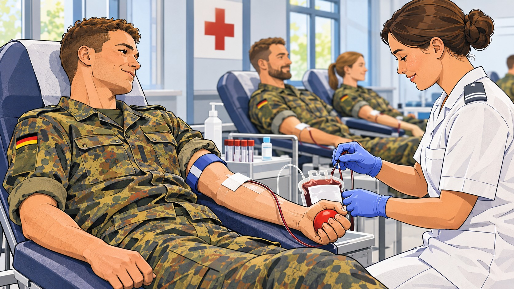
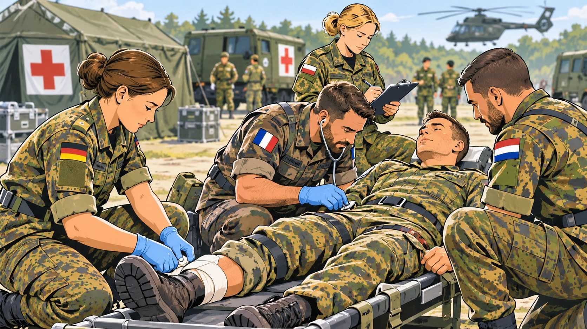
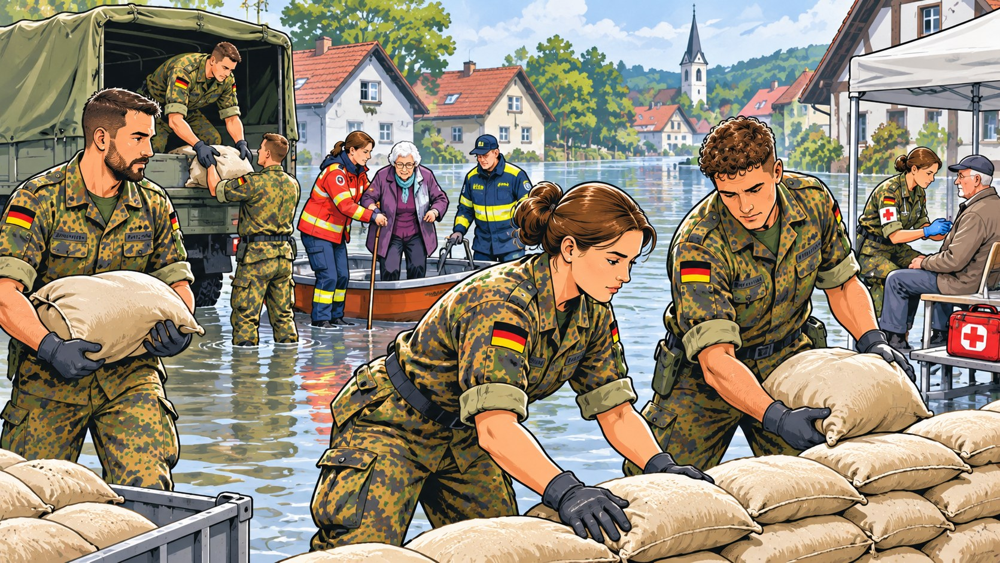
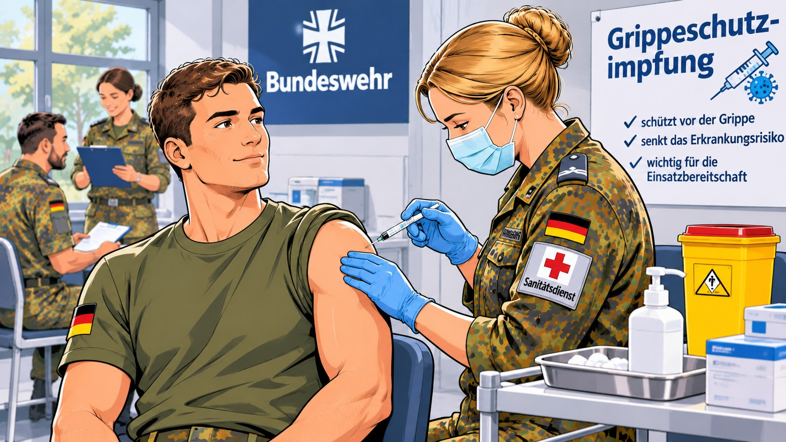
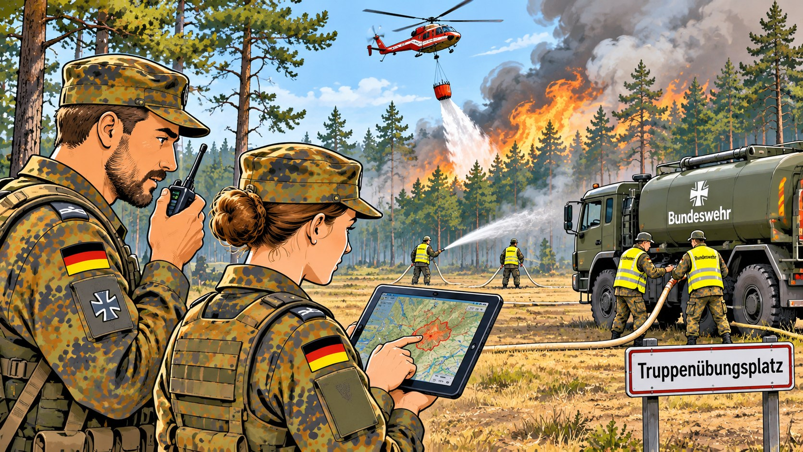
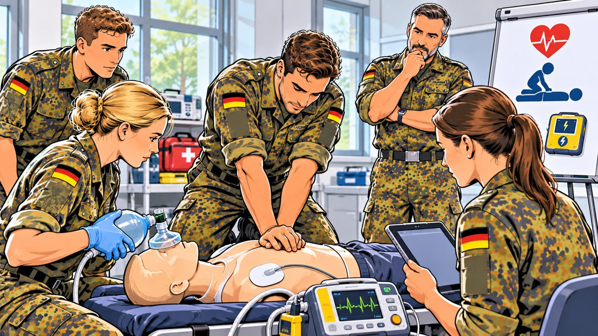
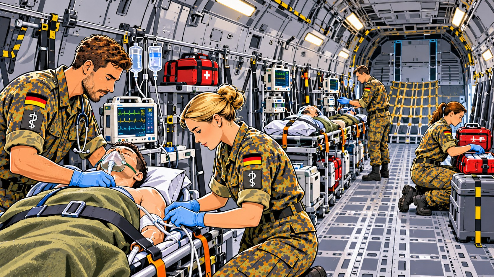
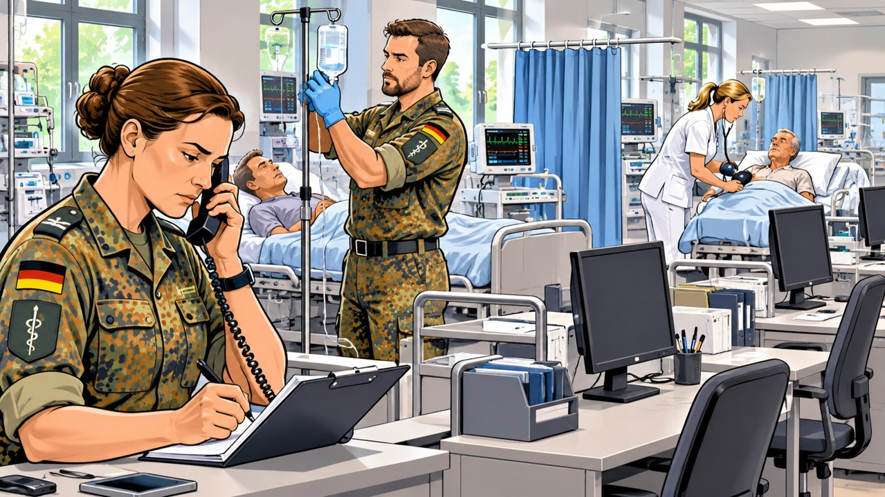
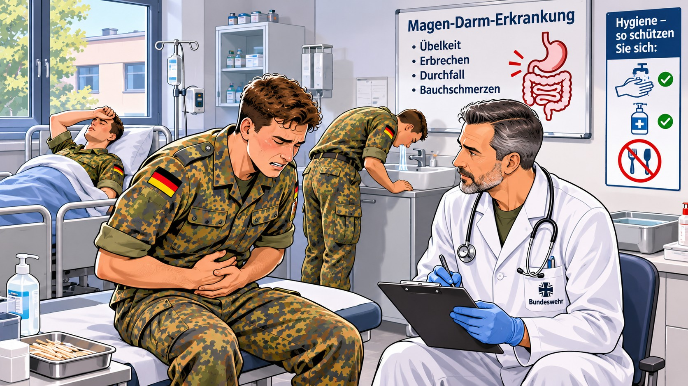

Deutsch als Fremdsprache · A2–B1
Militärische Nachrichten
20 Nachrichten zum Hörverstehen mit Wortschatz und interaktiven Übungen.
Wählen Sie eine Nachricht aus.

01Blutspendeaktion in der Kaserne
▶ Nachricht öffnen
02Internationale Übung des Sanitätsdienstes
▶ Nachricht öffnen 03
03Unfall bei der Sportausbildung
▶ Nachricht öffnen 04
04Neuer Operationssaal im Bundeswehrkrankenhaus
▶ Nachricht öffnen
05Bundeswehr hilft nach Überschwemmungen
▶ Nachricht öffnen06
Probleme bei der Versorgung mit Medikamenten
▶ Nachricht öffnen 07
07Öffentliches Gelöbnis auf dem Marktplatz
▶ Nachricht öffnen
08Grippeschutzimpfung für Bundeswehrangehörige
▶ Nachricht öffnen 09
09Neue Rettungsfahrzeuge für den Sanitätsdienst
▶ Nachricht öffnen
10Waldbrand auf einem Truppenübungsplatz
▶ Nachricht öffnen
11Fortbildung für Notfallsanitäter
▶ Nachricht öffnen 12
12Militärischer Konvoi auf der Autobahn
▶ Nachricht öffnen
13Evakuierung verletzter Soldaten
▶ Nachricht öffnen
14Personalmangel im Sanitätsdienst
▶ Nachricht öffnen15
Tag der offenen Tür im Bundeswehrkrankenhaus
▶ Nachricht öffnen 16
16Neue Unterkünfte für Soldaten
▶ Nachricht öffnen 17
17Gemeinsame Katastrophenschutzübung
▶ Nachricht öffnen
18Magen-Darm-Erkrankungen in einer Kaserne
▶ Nachricht öffnen 19
19Rettungsübung auf hoher See
▶ Nachricht öffnen 20
20